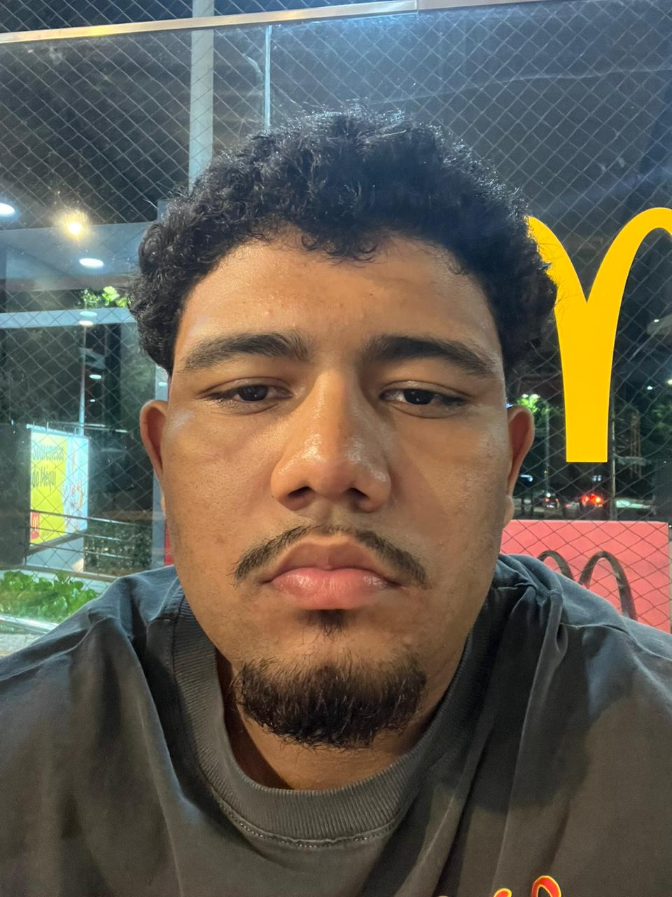

João Gabriel
Contatos
- Telefone - (11)93219-8550
- E-mail - joao1306gabril@gmail.com
- Git-hub - github.com/joao619gabrile
- Estado - São Paulo
Habilidades Técnicas
- Linguagens de programação: HTML, CSS, JavaScript, Python, SQL
- Ferramentas e tecnologias: Git/GitHub, VS Code, Figma
- Conhecimentos básicos em metodologias ágeis (Scrum, Kanban)
- Desenvolvimento responsivo e design adaptado para dispositivos móveis
- Lógica de programação e resolução de problemas
Projetos Pessoais
Portfólio Web
Desenvolvi um portfólio pessoal responsivo, utilizando HTML, CSS e JavaScript, para exibir projetos e experiências práticas. O projeto inclui animações e transições suaves.
- Tecnologias utilizadas: HTML, CSS, JavaScript
- Disponível em: https://joao619gabrile.github.io/portifolio-mobf/
Formulário Dinâmico
Criei um formulário responsivo e interativo que se adapta a diferentes tamanhos de tela e inclui transições suaves ao redimensionar.
- Tecnologias utilizadas: HTML, CSS, JavaScript
- Disponível em: [Link do projeto no GitHub ou site]
Experiências Complementares
- Participação em comunidades de desenvolvedores, como fóruns e grupos de estudo
- Estudos autônomos com foco em desenvolvimento web e práticas de boas codificações
- Implementação de pequenos projetos pessoais para aplicação prática de conceitos adquiridos
Idiomas
- Português: Nativo
- Ingles: Intermediário(leitura técnica de documentação)